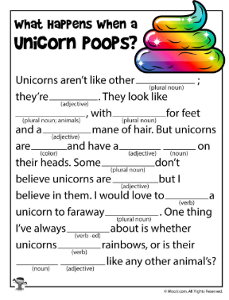
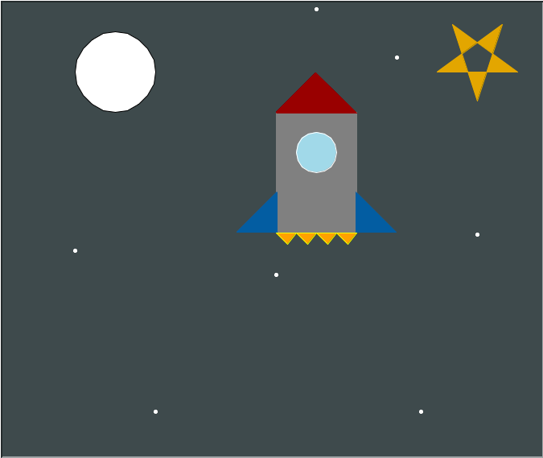
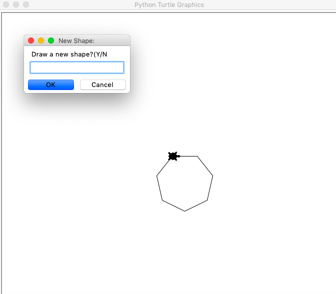
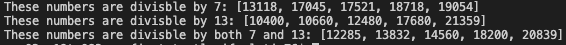
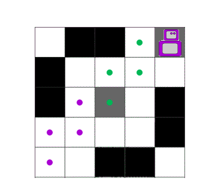
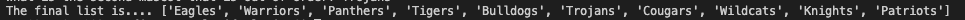

| Screenshots | Description of the program | Program repository |
|---|---|---|
|  |
I wrote this program using python. The goal of the program was to use user input to put together a story. It worked out very well and made an intresting story. |
madlib.py |
|  |
I wrote this program using the "turtle" module. The goal of the program was to draw a simple rocket to learn the basics of turtle. I took extra time and detail to make a moon and stars in the background. |
main.py |
|  |
I wrote this program using python. The goal of the program was to use user input and functions to draw shapes. |
shapes.py |
|  |
I wrote this program using python. The goal of the program was to use lists and and list functions we learned to sort out numbers by divisibility. |
numbers.py |
|  |
I wrote this program using the "turtle" module. The goal of the program was to solve the maze using different functions. I enjoyed thi project and found it useful! |
maze.py |
|  |
I wrote this program using the Python. The goal of the program was to use user input to sort a list of school mascots. |
mascot.py |